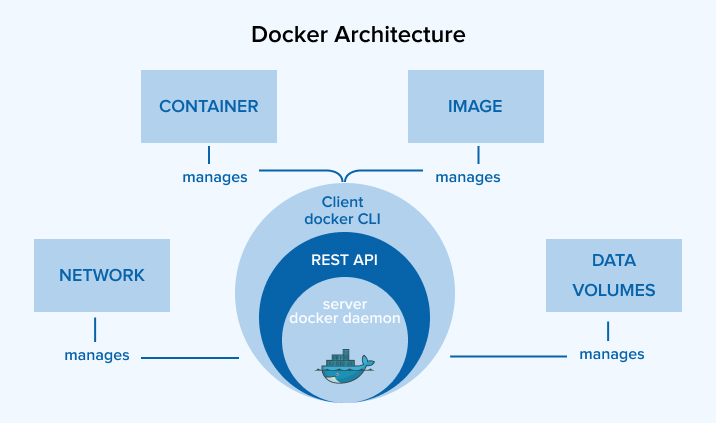
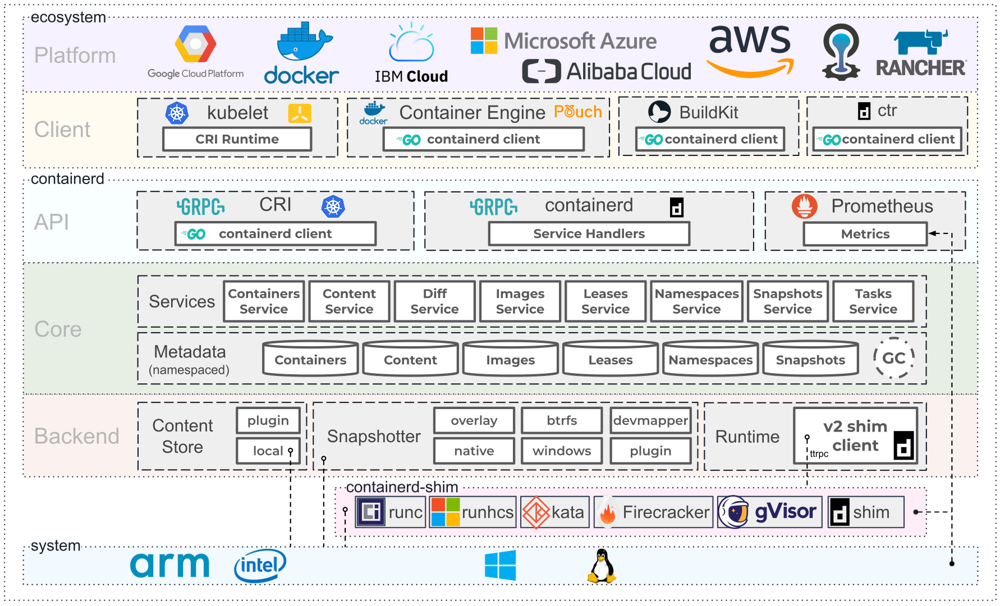

🏗️ Архитектура Docker
💡 Тезис
Docker использует клиент-серверную архитектуру.
Пользователь взаимодействует с Docker CLI, который отправляет команды демону Docker (dockerd).
Демон, в свою очередь, управляет объектами (контейнерами, образами, сетями, томами) и делегирует задачи по запуску контейнеров более низкоуровневым инструментам, таким как containerd и runc.

🧱 Ключевые компоненты
🖥️ Docker CLI
Интерфейс командной строки (CLI), через который пользователь взаимодействует с Docker.
Принцип работы
CLI преобразует команды (docker run, docker build) в HTTP-запросы к Docker API и отправляет их демону dockerd.
Удаленное управление
Вы можете подключить локальный Docker CLI к демону на удаленной машине, указав его адрес в переменной окружения DOCKER_HOST.
Подробнее см. в главе 👉 Docker CLI.
📦 Docker Daemon
Основной управляющий процесс (сервис), который слушает запросы по API и управляет объектами Docker.
💡 Основные задачи dockerd
- Управление объектами: Создание, запуск, остановка и удаление контейнеров, образов, томов и сетей,
- API: Предоставление REST API для взаимодействия с клиентами,
- Делегирование: Передача задач по управлению жизненным циклом контейнеров демону
containerd.
Конфигурация демона
Настройки dockerd хранятся в файле /etc/docker/daemon.json.
⚙️ Containerd
Высокоуровневый runtime, который управляет полным жизненным циклом контейнера.
💡 Основные задачи containerd
- Управление образами: Загрузка, хранение и передача образов.
- Управление выполнением: Создание, запуск и остановка контейнеров через
runc. - Управление снимками (snapshots): Управление файловыми системами контейнеров.
- API: Предоставление собственного gRPC API для
dockerdи других клиентов (например, Kubernetes через CRI-плагин).
Роль containerd-shim
containerd не запускает контейнеры напрямую.
Для каждого контейнера он создает дочерний процесс-прокладку — containerd-shim.
Этот shim вызывает runc для создания контейнера, а затем продолжает работать, чтобы:
- Сохранять открытыми потоки
STDIN,STDOUT,STDERR, - Сообщать
containerdо статусе выхода контейнера, - Позволить
runcзавершить свою работу после запуска контейнера.
Расширяемость и конфигурация
- Конфигурация:
containerdнастраивается через файлconfig.toml(обычно в/etc/containerd/config.toml). Именно он подготавливает спецификациюconfig.jsonдляrunc. - Плагины: Архитектура
containerdполностью основана на плагинах. Вы можете расширять его функциональность, создавая собственные плагины на Go. - Документация: Официальная документация доступна на containerd.io.

🔧 Runc
Низкоуровневый runtime (OCI-совместимый), который отвечает непосредственно за создание и запуск контейнера.
💡 Основные задачи runc
- Создание изоляции: Настройка
namespacesиcgroups. - Запуск процесса: Запуск основного процесса внутри изолированной среды.
- Работа с
config.json: Применение конфигурации, подготовленнойcontainerd.
Ограниченная ответственность
runc ничего не знает об образах, сетях или томах.
Его единственная задача — взять подготовленную файловую систему и конфигурационный файл и запустить процесс.
После запуска runc завершает свою работу.
🚀 Жизненный цикл
Рассмотрим, что происходит при выполнении команды docker run -d nginx:
- Docker CLI отправляет API-запрос
POST /containers/createиPOST /containers/startдемонуdockerd. dockerdполучает запрос, проверяет наличие образаnginx, при необходимости скачивает его и обращается кcontainerdчерез gRPC API для запуска контейнера.containerd:- Создает снимок (snapshot) файловой системы для контейнера из образа
nginx. - Готовит конфигурацию контейнера (
config.json). - Запускает процесс
containerd-shimдля будущего контейнера.
- Создает снимок (snapshot) файловой системы для контейнера из образа
containerd-shimвызываетruncс путем кconfig.json.runc:- Использует системные вызовы ядра Linux для создания
namespacesиcgroups. - Запускает процесс
nginxвнутри изолированной среды. - Завершает свою работу.
- Использует системные вызовы ядра Linux для создания
containerd-shimостается работать, управляя потоками ввода-вывода и отслеживая статус процессаnginx.
🧰 Экосистема Docker
Docker — это не просто runtime, а целая платформа. Вот ключевые компоненты его экосистемы:
🏗️ Сборка и образы
| Компонент | Назначение | Ссылка |
|---|---|---|
| Dockerfile | Описание процесса сборки образа через инструкции (FROM, RUN, CMD и др.) |
Подробнее |
| BuildKit | Расширенный движок сборки образов: кэш, secrets, многоплатформенность | Подробнее |
| Файловая система | Слои, overlay2, copy-on-write, оптимизация структуры образов | Подробнее |
🧱 Ресурсы
| Компонент | Назначение | Ссылка |
|---|---|---|
| Volumes (Тома) | Хранение данных вне контейнера, поддержка локальных и удалённых хранилищ | Подробнее |
| Networks (Сети) | Изоляция и взаимодействие между контейнерами, поддержка CNI | Подробнее |
| Logging Drivers | Подключение систем логирования (json-file, syslog, ELK и др.) | Подробнее |
⚙️ Управление
| Компонент | Назначение | Ссылка |
|---|---|---|
| Docker Compose | Управление многоконтейнерными приложениями через docker-compose.yml |
Подробнее |
| Процессы | Управление процессами внутри контейнера | Подробнее |
🧩 Расширения
| Компонент | Назначение | Ссылка |
|---|---|---|
| Plugins (Плагины) | Расширение функциональности через volume-, network- и auth-плагины | Подробнее |
| Registries (Реестры) | Реестры образов: Docker Hub, Harbor, GitLab, RBAC, сканирование | Подробнее |
🔒 Безопасность
| Компонент | Назначение | Ссылка |
|---|---|---|
| Безопасность | Изоляция контейнеров (AppArmor, SELinux, seccomp) и проверка целостности образов (Docker Content Trust). | Подробнее |